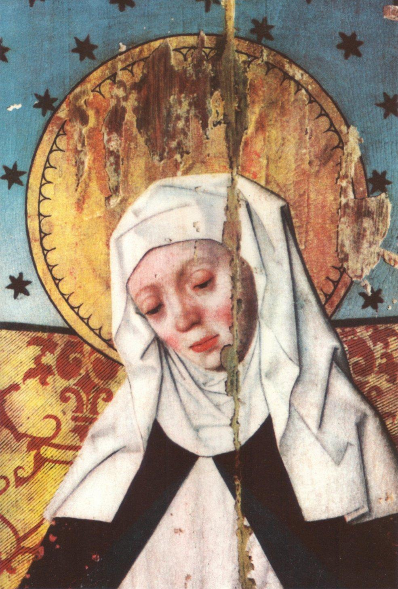

St Birgitta 23.7.
St. Birgitta
Frühes Leben und Hofzeit
Heilige Birgitta von Schweden (Birgitta Birgersdotter) erblickte um 1303 auf Schloss Finsta bei Uppsala das Licht der Welt. Aus einer einflussreichen Adelsfamilie stammend, erhielt sie eine umfassende Bildung, darunter Lateinkenntnisse. Bereits im Kindesalter zeigte sie eine starke Neigung zu Gebet und Fasten.
Ehe und Mutterrolle
Mit etwa 13 Jahren wurde Birgitta an den Hof von Königin Blanka von Namur geschickt, wo sie höfische Tugenden erlernte. Im Alter von rund 23 Jahren heiratete sie Ulf Gudmarsson. Aus dieser Verbindung gingen acht Kinder hervor, von denen vier das Erwachsenenalter erreichten. Trotz ihrer weltlichen Pflichten blieb ihre Frömmigkeit ungebrochen.
Visionen und Offenbarungen
Nach dem Tod ihres Mannes 1344 zog sie sich mit zwei Töchtern nach Vadstena zurück und widmete sich ganz dem geistlichen Leben. Dort empfing sie zahlreiche Visionen, die sie in den „Offenbarungen“ festhielt. Ihre Botschaften forderten Reformen in Kirche und Gesellschaft und betonten die Bedeutung von Buße, Gebet und christlicher Nächstenliebe.
Pilgerreise und Gebet in Rom
1346 brach Birgitta zu Pilgerfahrten nach Santiago de Compostela und Rom auf. In Rom betete sie lange und inständig dafür, dass der Papst seinen Sitz von Avignon wieder nach Rom verlegen möge. Sie fühlte sich berufen, das Haupt der Kirche zu einer Rückkehr in die ewige Stadt zu bewegen, und suchte in zahlreichen Gebeten und Visionen die Nähe Gottes für dieses Anliegen.
Eintreten beim Papst in Avignon
Anschließend reiste sie nach Avignon, um Papst Clemens VI. persönlich um die Rückkehr des Heiligen Stuhls zu bitten. Durch ihren beharrlichen Einsatz und ihre Visionen trug sie wesentlich dazu bei, den Druck auf den päpstlichen Hof zu erhöhen.
Gründung des Brigittinerordens
Clemens VI. gewährte ihr die Erlaubnis, einen Frauenorden zu gründen. Vadstena wurde zum Mutterhaus des Ordens der Heiligen Maria (Brigittiner). Dieser verband kontemplatives Leben mit aktiver Armenfürsorge und Krankenpflege.
Spätwerk und Heiligsprechung
Birgitta verfasste weiterhin Visionen und richtete Briefe an Päpste, Könige und Fürsten. Sie starb am 23. Juli 1373 in Rom und wurde zunächst in San Lorenzo in Panisperna beigesetzt. 1391 selig- und 1394 heiliggesprochen, ernannte Papst Johannes Paul II. sie 1999 zur Kirchenlehrerin.
Vermächtnis
Ihr Orden, die Brigittiner, und ihr spirituelles Wirken haben bis heute Einfluss auf die katholische Frömmigkeit. Vor allem ihr leidenschaftliches Gebet für die Einheit der Kirche und die Rückkehr des Papsttums nach Rom bleibt ein herausragendes Zeugnis ihres Glaubens.

Auszug aus „Die Offenbarungen der heiligen Birgitta von Schweden“
Der untere Abschnitt ist kein normaler Biografie-Text, sondern ein längerer, offenbar nur grob übernommener Auszug aus einem älteren Druck von Birgittas Offenbarungen bzw. einer Einführung dazu. Wegen der vielen OCR- und Zeilenumbruchspuren ist er eher als Quellenmaterial zu lesen als als fertig redigierter Artikel.
Auszug aufklappen
Einführung
.....Daß wir überhaupt etwas über die mittelalterliche Hochkultur Schwedens vor
der tragischen Katastrophe der Reformation wissen, beruht auf ein paar
interessanten Umständen. In dem von der heiligen Birgitta gegründeten
Vadstena-Kloster gab es eine so große Menge Bücher und Handschriften, daß
trotz allem einige hundert wertvolle Folianten erhalten geblieben sind.....
.....daß Vadstena ein paar Jahrhunderte lang in der Geschichte Schwedens ein
Kulturzentrum ohnegleichen war, das erst in den allgemeinen Wirren der
Reformation erlosch.....
.....Durch viele beredte Zeugen kennen wir die Macht, die ihre Persönlichkeit auf
ihre Zeit, sowohl in Schweden wie in Italien, ausstrahlte.....
.....Vadstena und die heilige Birgitta sind Schwedens größte Erinnerungen aus
dem Mittelalter.....
.....Gegen diesen Hintergrund muß man im folgenden Jahrhundert das Auftreten
der heiligen Birgitta sehen, der größten Frauengestalt, die unser Land
hervorbrachte, die einzige kanonisierte Heilige des Nordens.....
.....Birgitta wuchs also in einem aristokratischen, reichen und hochgebildeten
schwedischen Milieu auf.....
.....und durch ihre eigenen Schriften, die Offenbarungen. Diese bilden einen
starken Band von 1400 Großoktav-Seiten.....
.....Es ist jedoch zu vermerken, daß Birgitta nach mehreren Quellen als junges
Mädchen Visionen gehabt haben soll. Danach sah das Mädchen, zehnjährig, auf
dem väterlichen Hofe Finsta in Uppland den Gekreuzigten und hörte ihn sagen,
daß alle, die ihn verachten und seine Liebe vergessen, schuldig seien an der Qual,
die er leide.....
.....Die Tante traf ihre Nichte eines Tages mit Handarbeit beschäftigt. An ihrer
Seite saß eine unbekannte Jungfrau und half ihr. Ein andermal sah die Tante sie
neben ihrem Bette liegen und heftig weinen. Die Tante, eine nüchterne Frau, wie
es scheint, hegte den Verdacht, Dienstvolk möchte das Mädchen vielleicht
„trügerische Gebete" gelehrt haben (Gebete um eitle Dinge), und sie griff nach
dem Reis, um sie zu züchtigen. Aber das Reis zerbrach in ihrer Hand. Birgitta
erzählte ihr dann, sie sei aus dem Bett aufgestanden, „um den zu preisen, der mir
immer zu helfen pflegt" ... „Ich habe den Gekreuzigten gesehen".....
.....Sie wollte lieber sterben als eine Ehe eingehen; aber sie wurde gezwungen, den
"Wünschen ihres Vaters nachzugeben.....“
.....Sie speiste bereits zu ihres Mannes Lebzeiten zwölf Arme an ihrem Tisch und
bediente sie selbst. Sie übte große Wohltätigkeit gegen Arme und Kranke. Sie
übernahm die ganze Ausbildung und Erziehung eines armen jungen Mädchens.
Sie war besonders darum bemüht, gefallenen Frauen zu einem sittlich geordneten
Leben zurückzuverhelfen. Sie gab Geschenke an Klöster und Kirchen und übte
sich in allen Werken der Nächstenliebe.....
.....Von großer Bedeutung war die Wallfahrt nach Spanien in den Jahren 1341-
1342. Während dieser Reise erhielt Birgitta einen lebendigen Eindruck des
Unheils, das die „babylonische Gefangenschaft" des Papstes und der Krieg
zwischen England und Frankreich in sich trugen.....
.....Um diese Zeit beginnen Birgittas „himmlische Offenbarungen". Man muß sich
dabei erinnern, daß sie nicht eine ekstatische Jungfrau, sondern Hausfrau und
Mutter von acht Kindern ist,....
.....Birgitta wäre kaum die geworden, die sie wurde, hätte nicht der gelehrte und
höchst angesehene Matthias von Linköping nach genauer Prüfung seine
Autorität hinter ihre Ansprüche gestellt. Über die Art und Weise, wie Birgitta
ihre Offenbarungen empfing, sind wir ziemlich genau unterrichtet.....
.....Ihre beiden Beichtväter haben eine kleine Biographie über sie geschrieben.
Darin berichten sie, Birgitta habe bisweilen mündliche Antworten gegeben, wenn
sie in einer Gewissenssache befragt wurde. Aber es kam auch vor, „daß sie die
Worte, die ihr von Gott gegeben wurden, mit eigener Hand in ihrer Muttersprache
schrieb, wenn sie gesund war, sie dann uns, ihre Beichtväter, mit größter
Genauigkeit ins Latein übersetzen ließ und darauf abhörte, vor sich den
selbstgeschriebenen Wortlaut, damit nicht ein einziges Wort über das, was sie in
der Vision von Gott gehört oder gesehen hatte, hinzugefügt oder weggenommen
würde.....“
.....Man hat sich in letzter Zeit darüber geeinigt, daß der lateinische Text der
maßgebende ist. Dieser beruht auf dem schwedischen Original, das mit äußerst
wenigen Ausnahmen verschwunden ist.....
.....Aber einem ungewöhnlich frommen Bruder namens Gerekinus wurde in einem
Gesicht bestätigt, daß Birgitta von Gott geschickt sei.....
.....Den Subprior Petrus Olavi haben wir schon als Birgittas Sekretär und
Beichtvater genannt. Auch er zögerte anfangs, ob er diesen mächtigen
Offenbarungen Glauben schenken dürfe, den befehlenden, kühnen Worten, von
denen Birgitta behauptete, sie seien ihr von Gott eingegeben. Aber er sollte ein
Erlebnis haben. Es traf ihn, wie ihm schien, ein gewaltsamer Schlag, der ihn zu
Boden warf. Nachdem man ihn auf seine Zelle getragen, blieb er fast die ganze
Nacht bewegungslos liegen. Von da an war er von der Echtheit der
Offenbarungen fest überzeugt.
Nachdem Birgitta Witwe geworden, verteilte sie ihre Besitzungen an die Armen
und an ihre Kinder. Es war ihr bewußt, daß sie vor etwas ganz Neuem stand.....
.....Birgitta ist so äußerst realistisch und nüchtern, daß man sich über diesen Strom
ekstatischer Offenbarungen wundert. Es wird berichtet, daß sie im Gebet keine
Personen sah, die zu ihr redeten, sondern Stimmen hörte.....
.....Aber sie konnte auch Christus und die Jungfrau Maria sehen. Besonders in
ihrer Todesstunde zu Rom sah sie „Christus auf eine wunderbare Weise zu ihrem
großen Troste".
Vorzüglich kennen wir eine Offenbarung, die sich in einer Weihnachtsnacht in der
Alvastra-Klosterkirche ereignete.....
.....Und die Stimme fuhr fort: „Fürchte nichts! Denn ich bin aller Dinge Schöpfer
und kein Betrüger. Ich rede zu dir nicht allein deinetwegen, sondern zur Rettung
anderer. Höre, was ich sage, und geh' zu Magister Matthias, deinem Beichtvater,
der geübt ist, die zwei Geister zu unterscheiden. Sag' ihm von mir, was ich dir sage,
daß du sein sollst meine Braut und mein Sprachrohr, und du sollst hören und
sehen geistliche Dinge, und mein Geist soll bei dir bleiben bis zu deinem Tod.".....
.....Nicht eine überspannte oder unbefriedigte junge Frau fühlt sich zu Christi
Braut erwählt, sondern eine demütige Witwe, die acht Kinder in die Welt gesetzt
hatte. ....
.....Die Antwort auf die letzte Frage lautet: „Wenn die Qualen des Abgrundes
sichtbar erschienen, müßte der Mensch völlig erstarren vor Furcht und den Himmel
aus Angst und nicht aus Liebe suchen. Und weil niemand die himmlischen Freuden
aus Furcht vor Strafe erstreben soll, sondern aus übernatürlicher Liebe zu Gott,
deshalb werden jetzt die Höllenstrafen verborgen."....
.....Fünf Tage vor ihrem Tode sah sie Christus „vor dem Altar, der in ihrer
Kammer stand".....
.....Sie ist immer unsentimental, realistisch. Sie empfing ihre Offenbarungen in
ekstatischem Zustand; aber in der Regel ist sie nüchtern und sachlich, wenn sie
dieselben niederschreiben läßt. Es findet sich keine Spur religiöser Hysterie bei
ihr. Sie ist realistisch auch im Hinblick auf ihre eigene Person.....
.....„Gott tut wie eine geschickte Wäscherin, die unreine Kleider in die Wellen legt,
daß sie von der Wasserströmung reiner und weißer werden. Und gleichwohl gibt sie
sorgfältig acht auf den Wellenschlag, so daß die Kleider nicht sinken. So legt
Gott in der Welt seine Freunde indie Wogen der Betrübnis und Armut, worin sie
für das ewige Leben gereinigt werden, und bewahrt sie behutsam, daß sie nicht vor
zuviel Sorge und untragbaren Schmerzen sinken.".....
.“´....So war mein Sohn, aller Dinge Herr und Schöpfer, der Allerärmste, um den
Menschen reich zu machen an ewigen Gütern und nicht an vergänglichen. Und er
trug die schwerste Bürde auf seinem Rücken, indem er das harte und schwere
Kreuz trug und die Pein und aller Menschen Sünden reinigte und abwusch mit
seinem teuren Blut'.".....
.....daß der Text, wo die Sünden aufgezählt standen, ausgelöscht war.
Die Jungfrau sagt: „Das geschah durch die Gebete und Tränen der Mutter des
Sünders.".....
.....Die moderne Forschung konnte nachweisen, daß sich unter den vielen, die sich
an Birgitta inspirierten und in ihr ein Vorbild sahen, auch zwei der bedeutendsten
Frauen der Geschichte befinden, Katharina von Siena und Jeanne d'Arc.
Birgitta und ihr inneres LebenBirgitta und ihr inneres Leben
Die Worte unseres Herrn Jesus Christus an die Tochter, die er jetzt zur Braut
genommen hat, über die Artikel des wahren Glaubens, und was die Zierden und
Zeichen und der Wille sind, welche die Braut haben soll, um dem Bräutigam zu
gefallen.
„Ich bin der Schöpfer des Himmels, der Erde, des Meeres und von allem, was
darin ist. Ich bin eins mit dem Vater und dem Heiligen Geist, nicht wie die Götter
aus Stein oder Gold, von denen man einst gesprochen hat, und nicht viele Götter,
die man damals gezählt hat, sondern ein einziger Gott, Sohn und Heiliger Geist,
drei Personen, aber einer dem Wesen nach, alles schaffend und von keinem
geschaffen, unveränderlich, allmächtig, bestehend ohne Anfang und Ende. Ich bin,
der von der Jungfrau geboren wurde, aber nicht die Gottheit verlor, sondern sie
mit der menschlichen Natur vereinigte, so daß ich in einer einzigen Person Gottes
wahrer Sohn und Sohn der Jungfrau sein sollte. Ich bin, der am Kreuze hing,
starb und begraben wurde, während ich die Gottheit unversehrt bewahrte.....
Ich bin derselbe, der von den Toten auferstand und zum Himmel aufstieg und der
jetzt in seinem Geiste mit dir spricht. Ich habe dich auserwählt und zu meiner Braut
genommen, um dir meine Geheimnisse zu zeigen, denn so behagt es mir. .....“
“.....Ich habe wieder sein Erbteil für ihn(Mensch) erkauft, das er verloren, aber er ist
so wahnsinnig und so ohne jeden Verstand, daß er lieber den vergänglichen Ruhm
haben will, der nichts anderes ist als der Schaum des Meeres .....“
“.....Die zweiten sind, die gerne in aller Ewigkeit leben wollten, um in Ewigkeit zu
sündigen, und die ihren ganzen Willen auf die Welt gerichtet haben und die, wenn
sie einmal etwas für mich tun, es mit der Absicht tun, daß ihr zeitliches Glück
wachsen und sich heben möchte. Denen werden keine körperlichen oder großen
Herzensqualen gegeben, sondern sie sollen in ihrer Macht und ihrem Willen
bleiben, denn für das geringste Gute, das sie mir getan haben, sollen sie hier ihren
Lohn empfangen und dann in Ewigkeit gepeinigt werden. Wessen Wille beständig
zur Sünde sich richtet, für den soll auch die Pein beständig sein.....“
“.....sieh keine Sünde als leicht an und keine als wert, übersehen zu werden. Denn
alles, was du übersiehst, werde ich in Erinnerung behalten und richten.....“
“.....denn wie der Vater und der Sohn ist er (der Heilige Geist) der Schöpfer von
allem und allmächtig.....“
“.....denn es gibt nur einen Gott, Vater, Sohn und Heiligen Geist, und diese sind
nicht drei Götter, sondern ein Gott.....“
“.....Denn keiner in dieser Welt ist so im Teufel verwurzelt, daß der gute Geist nicht
irgendeinmal sein Herz besucht und es berührt, und ebenso ist keiner so gut, daß
nicht der Teufel gern versucht, ihm mit Versuchung nahe zu kommen. Viele Gute
und Rechtschaffene werden ja mit Gottes Erlaubnis vom Teufel versucht, und
dies nicht deshalb, weil sie etwas Böses getan haben, sondern damit ihre Ehre
größer werden möge.....“
Von den drei wunderbaren Dingen, die Christus mit der Braut getan hat, und wie
sie es nicht ertragen kann, die Engel und Teufel in ihrem eigentlichen Wesen zu
sehen, wegen der Schönheit der ersteren und der Schrecklichkeit der letzteren,
und warum Christus geruht, eine solche Witwe wie sie zu besuchen.
“.....Wenn du nämlich die geistliche Schönheit der Engel und der heiligen Seelen
sähest,würde es dein Körper nicht ertragen, sie zu sehen, sondern zerbrechen wie
ein brüchiges und zersprungenes Gefäß, weil deine Seele sich über das Gesicht
so freute. Und wenn du die Teufel so sähest, wie sie sind, würdest du entweder mit
einem großen Schmerz leben oder durch einen plötzlichen Tod sterben, wegen des
schrecklichen Anblickes. Deshalb zeigen sich dir geistliche Dinge körperlich......“
“.....Geistliche Worte werden dir als Gleichnisse gesagt, denn sonst könnte dein
Geist sie nicht fassen. Aber wunderbarer als alles andere ist, daß du meinen Geist
in deinem Herzen sich rühren fühlst.....“
“.....Erstens kann ich den Armen reich und den Toren und mit geringem Verstand
Begabten vollkommen weise und verständig machen. Ich kann auch Alter in
Jugend verwandeln.....“
“.....Unenthaltsamkeit ist mir so verächtlich, daß nicht einmal eine Jungfrau, die von
unzüchtigen Gedanken versucht wird, vor mir eine reine Jungfrau ist, sofern sie
nicht diesen Gedanken bereut und sich bessert.....“
“.....Mir, die Gottes Mutter ist, und die nach seinem Tod von unbeschreiblichem
Kummer geplagt wurde, zeigte sich dieser mein Sohn früher als den anderen, ja
leiblich zeigte er sich mir, mich tröstend und daran erinnernd, daß er sichtbar zum
Himmel aufsteigen würde.....“
.....Christus spricht in Rom zu seiner Braut, der heiligen Birgitta, sagt ihr den Tag
und die Art ihres Todes voraus, bestimmt, wie sie mit den Offenbarungsbüchern
verfahren soll, sagt, daß es, wenn es ihm so behagt, viele Menschen in der Welt
geben wird, die sie mit Andacht entgegennehmen und somit seine Gnade gewinnen
werden, und verordnet, wo ihr Leib begraben werden soll.
“.....“.....denn mein Gericht wird über allen Völkern in Erfüllung gehen, die nicht
demütig zu mir umkehren, wie es dir gezeigt worden ist.".....“
Birgittas AngehörigeBirgittas Angehörige
Herr Ulf Gudmarsson, der verstorbene Mann der heiligen Birgitta, offenbart
sich ihr, erklärt die Ursachen der Strafen, die er im Fegefeuer auszustehen hat,
und verrät die Hilfsmittel, die zu seiner schnellen Befreiung führen.
“.....Du sollst vor allem umsichtig gegen arme Leute sein und nicht sparen, wenn es
gilt, Gefäße, Pferde und anderes dergleichen auszuteilen,.....“
Ein gerechter Adelsmann weigerte sich in guter Absicht, eine hohe Würde in der
Regierung des Reiches anzunehmen. Die Mutter Gottes warf ihm dies durch die
Braut vor und gebot, daß er sie annehmen und immer die Worte der Wahrheit im
Munde und das Schwert der Gerechtigkeit in der Hand haben möge, ohne
Ansehen der Person.
“.....Aber die, welche Würden und Regierungsaufträge um ihrer weltlichen Ehre
willen erstreben, sind nicht die wahren Fürsten, sondern die schlimmsten
Tyrannen.....“
“.....so münden viele Tugenden in der Liebe zum Nächsten. Denn jeder, der den
Nächsten liebt, soll vor allem darüber trauern, daß nicht alle, die durch Jesu
Christi Blut erlöst sind, Gott die Liebe zurückgeben.....“
“.....Denn, wenn ein liebevoller Mann seinen Nächsten betrübt sieht, soll er ihn mit
liebesreichen Worten trösten; er soll den verteidigen, der ungerecht angegriffen
wird, die Kranken besuchen, die Gefangenen freikaufen, sich der Armen nicht
schämen, immer die Wahrheit lieben, nichts vor die Liebe zu Gott stellen, niemals
vom Wege der Gerechtigkeit abweichen.....“
“.....Ein vernünftiger Gebrauch des Zeitlichen besteht darin, Eigentum zu seinem
mäßigen Unterhalt, aber nicht zu einem Leben in Überfluß zu haben. ....“
.....Das Gebet der heiligen Birgitta zur heiligen Maria und die Antwort der
Jungfrau, worin sie die Tochter der Braut, die selige Katharina, rühmt......
Die Standhaftigkeit der heiligen Birgitta beim Tod ihrer Tochter. Und wer die
wahre Mutter und wer die Stiefmutter ist, und wie Mädchen erzogen werden
sollen.
“.....„Jede Mutter, die darüber weint, daß ihre Tochter Gott erzürnte, und sie nach
bestem Gewissen erzieht, ist eine wahre Mutter der wahren Liebe und eine Mutter
der Tränen, und ihre Tochter ist Gottes Tochter um der Mutter willen. Aber die
Mutter, die sich darüber freut, daß ihre Tochter versteht, sich nach der Welt zu
benehmen, und sich nicht um ihre Sitten kümmert, wenn diese bloß erhöht und
geehrt in der Welt wird, eine solche Frau ist keine Mutter, sondern eine
Stiefmutter. Deshalb wird deine Tochter um deiner Liebe und deines guten
Willens willen auf dem kürzesten Weg die Krone der Ehre erreichen."
Christi huldreiche Fragen an seine Braut und die demütigen Antworten der
Braut an Christus, und wie Christus der Tochter der Braut drei lobenswerte
Stände zur Wahl vorlegt, nämlich den der Jungfrau, der Hausfrau und der Witwe.
“.....Ferner sagte der Herr: „Die Jungfräulichkeit ist gut und steht am höchsten,
denn sie gleicht den Engeln, wenn sie auf vernünftige und passende Weise
beobachtet wird. Aber wenn das eine ohne das andere geschieht, das heißt die
Jungfräulichkeit des Fleisches, aber nicht des Sinnes, so ist die Jungfräulichkeit
entstellt. Denn eine demütige und fromme Hausfrau gefällt mir besser als eine
hochmütige und unbescheidene Jungfrau. Eine ehrbare Hausfrau, die nach ihrem
Stand in Gottesfurcht lebt, kann ebenso großes Verdienst sammeln wie eine
tüchtige und demütige Jungfrau. Denn obwohl es groß ist, im Feuer der Prüfung zu
sein und trotzdem nicht zu brennen, ist es doch gleich groß, außerhalb des Feuers
eines reinen Lebens zu sein, aber lieber im Feuer sein zu wollen und außerhalb des
Feuers in größerer Liebe zu Gott zu entbrennen, als es der tut, welcher im Feuer
lebt.....“
“.....Deshalb können mir sowohl Jungfrauen wie Witwen ebenso gut gefallen, wenn
bloß ihr ganzes Streben auf mich gerichtet und ihr Leben gut ist."
Ferner sagte der Herr: „Ob deine Tochter nun jungfräulich oder ehelich lebt, ist
mir gleich lieb, wenn sie sich nur auf meinen Willen einrichtet.....“
Um Christi GeburtUm Christi Geburt
Die Vision, die Frau Birgitta in Bethlehem hatte, wo Jungfrau Maria ihr zeigte,
wie es zuging, als sie ihren ehrenreichen Sohn gebar, was sie Frau Birgitta in Rom
fünfzehn Jahre früher, vor der Abreise nach Bethlehem, versprochen hatte, wie
es aus dem ersten Kapitel dieses Buches hervorgeht.
“.....Während sie auf diese Weise im Gebet versunken war, sah ich das Kind in
ihrem Mutterleib sich rühren, und in derselben Stunde, ja in einem Augenblick,
gebar sie ihren Sohn, von welchem ein so unsäglicher Strahlenglanz ausging, daß
die Sonne nicht mit ihm verglichen werden könnte.....“
“.....Ich gebar ihn nämlich mit einem solchen Jubel und einer solchen Freude der
Seele, daß ich kein Ungemach fühlte, als er aus meinem Leib kam, oder
irgendeinen Schmerz......“
“.....Und dies sollst du wissen, daß, obwohl die Menschen nach ihrer menschlichen
Auffassung zu behaupten suchen, mein Sohn sei auf gewöhnliche Weise geboren
worden, es doch Wahrheit entsprechend und erhaben über allem Zweifel ist, daß
er so geboren wurde, wie ich es dir vorhin gesagt habe und du es jetzt gesehen
hast.“
“Ich sah auch auf demselben Platz, wo die Jungfrau Maria und Josef standen und
das Kind in der Krippe anbeteten, daß die Hirten und die, welche die Herde
bewachten, dann kamen, um das Kind zu sehen und anzubeten....“
....In dieser Offenbarung, die die Braut in der Kapelle zu Bethlehem hatte, wo
Christus geboren wurde, erzählt ihr die Jungfrau Maria, wie die drei weisen
Könige ihren Sohn Christus anbeteten.
„Die Mutter des Herrn sagte auch zu mir: „Du sollst wissen, meine Tochter, daß
ich, als die drei weisen Könige zum Stall kamen, um meinen Sohn anzubeten, im
voraus von ihrer Ankunft wußte. Und als sie hineingingen und ihn anbeteten,
jubelte mein Sohn, und aus Freude hatte er da ein milderes Angesicht als sonst.
Auch ich freute mich und jubelte, und mein Sinn war voll von wunderbarem Jubel.
Ich achtete auf ihre Worte und Handlungen und bewahrte sie in meinem Herzen."“
“Die Mutter Gottes spricht: „Dieselbe Demut erfüllt jetzt meinen Sohn in der
Macht seiner Gottheit wie damals, als er in der Krippe zwischen zwei Tieren
lag.....“
“.....Ebenso bin ich, seine Mutter, jetzt gleich demütig in meinem Leib, der über
allem Geschaffenen erhaben ist, wie damals, als ich mit Josef verlobt war. Jedoch
sollst du wissen und davon überzeugt sein, daß Josef, bevor er sich mit mir verlobte,
durch den Heiligen Geist verstand, daß ich Gott Jungfräulichkeit gelobt hatte
und in Gedanken, Worten und Handlung unbefleckt war. Er verlobte sich mit mir,
um mir zu dienen und mich als Herrscherin und nicht als Hausfrau zu haben. Und
ich war durch den Heiligen Geist versichert, daß meine Jungfräulichkeit ewig
unberührt bleiben sollte, obwohl ich durch Gottes wunderbare Verordnung einem
Mann verlobt wurde. Aber seit ich Gottes Boten meine Einwilligung gegeben
hatte und Josef meinen Mutterleib durch die Kraft des Heiligen Geistes wachsen
sah, erschrak er sehr: er glaubte zwar nichts Böses von mir, aber er erinnerte sich,
daß die Propheten verkündet hatten, Gottes Sohn sollte durch eine Jungfrau
geboren werden, und er fand sich unwürdig, einer solchen Mutter zu dienen.
Indessen befahl ihm der Engel im Schlaf, nicht erschrocken zu sein, sondern mit
Liebe zu dienen. Von Reichtümern behielten ich und Josef nichts für uns selber
außer zu Gottes Ehre das zum Leben Nötige, das übrige gaben wir aus göttlicher
Liebe anderen.....“
“.....Und wie ich demütig in der Welt war, nur Gott und Josef bekannt, so bin ich
auch jetzt demütig, wo ich auf dem höchsten Thron sitze, bereit, die vernünftigen
Gebete aller vor Gott zu bringen. Aber einigen antwortete ich durch göttliche
Eingebung, zu anderen spreche ich auf eine mehr geheime Weise, wie es Gott
gefällt."“
Als Frau Birgitta schon von Jerusalem nach Rom zurückkehren wollte, ging sie am
Tag von Jungfrau Marias Geburt aus, um das Grab dieser Jungfrau und andere
heilige Stellen zu besuchen, die sich in der Nähe der Stadt Jerusalem befinden.
Als sie beim Grab betete, offenbarte sich ihr die Jungfrau, gab ihr sichere
Aufklärung über die Zeit vor ihrem Tod und ihrer Aufnahme und bezeugte, daß
dies wirklich ihr Grab war.
“.....Dann lag ich fünfzehn Tage tot in diesem Grab. Danach wurde ich in den
Himmel mit unendlicher Ehre und Freude aufgenommen. Die Kleider, in welchen
ich begraben wurde, blieben im Grabe zurück, und ich bekam statt dessen solche
Kleider, womit mein Sohn und Herr Jesus Christus bekleidet ist. Wisse auch, daß
sich kein menschlicher Leib im Himmel findet, außer dem ehrenreichen Leib meines
Sohnes und meinem Leib.....jetzt, nachdem ihr die heiligen Stätten besucht habt,
wo mein Sohn und ich leiblich gelebt haben, gestorben sind und begraben
wurden."“
Um Christi LeidenUm Christi Leiden
“.....Danach hörte ich sogleich eine Stimme, aber nicht von einer menschlichen
Zunge, und als ich sie hörte, bebte ich und fürchtete, daß es ein Blendwerk sein
könne. Sogleich zeigte sich vor mir ein Engel Gottes; er war wie der schönste
Mann, aber nicht mit Fleisch bekleidet, und er sagte zu mir: ,Heil dir, du
Hochgebenedeite“.....“
“.....Und wie er zur Freude meiner ganzen Seele in alle meine Glieder einging, so
ging er, während der Freude aller meiner Glieder und der unbeschreiblichen
Freude meiner jubelnden Seele, aus mir, ohne meinem Jungfrauentum zu
schaden.....“
“....“....Sieh, meine Tochter, dies hat mein Sohn für dich gelitten.".....“
“....“.....Denn wie Adam und Eva die Welt wegen eines Apfels verkauften, so
erlösten mein Sohn und ich die Welt gleichsam mit einem Herzen. Bedenke
deshalb, meine Tochter, wie beschaffen ich beim Tod meines Sohnes war, und es
wird dir dann nicht schwer werden, die Welt zu verlassen.".....“
Christus und die MenschenChristus und die Menschen
Die liebevollen Worte des Herrn an die Braut, wie die falschen Christen sich
vervielfältigen und Christus wieder kreuzigen, und wie er bereit wäre, noch einmal
den Tod für die Sünder zu leiden, wenn dies möglich wäre.
“.....Die Juden bereiteten mir während meines Leidens drei Werkzeuge der Plage.
Erstens das Holz, auf welchem ich, der Gegeißelte und Dornengekrönte,
festgenagelt wurde. Zweitens das Eisen, womit sie meine Hände und Füße
festnagelten. Drittens den Gallentrunk, den sie mir zu trinken gaben. Ferner
schmähten sie mich und sagten, ich sei ein Narr, wegen des Todes, den ich gerne
ertrug, und sie nannten mich wegen meiner Lehre Lügner. Solche gibt es jetzt viele
in der Welt, und es sind wenige, die mir Trost geben.....“
“.....Als Gallentrunk geben sie mir Betrübnis. Wegen der Pein, die ich freudig auf
mich nahm, nennen sie mich Lügner und Narr. Jetzt habe ich Macht, sie und die
ganze Welt wegen ihrer Sünden zu ertränken, wenn ich wollte. Wenn ich diese aber
ertränkte, da würden die, die zurückblieben, mir aus Furcht dienen, und dies wäre
nicht gerecht, denn der Mensch soll mir aus Liebe dienen. Wenn ich selbst in
sichtbarer Gestalt zu ihnen käme, würden es ihre Augen nicht ertragen, mich zu
sehen, und ihre Ohren nicht ertragen, mich zu hören.....“
“.....Dann zeigte sich die heilige Jungfrau, und der Sohn sagte zu ihr: „Was willst
du, meine auserwählte Mutter?" Sie sagte: „Mein Sohn, erbarme dich über deine
geschaffenen Wesen um meiner Liebe willen". Er antwortete: „Ich will ihnen noch
einmal um deinetwillen Barmherzigkeit erweisen". Dann sprach der Herr zur Braut
und sagte: „Ich bin der Gott und Herr der Engel. Ich bin Herr über Tod und
Leben. Ich, derselbe, will in deinem Herzen wohnen. Sieh, welche große Liebe ich
zu dir habe! Die Himmel und die Erde und alles, was darin ist, können mich nicht
fassen, und doch will ich in deinem Herzen wohnen, das nur ein kleines Stückchen
Fleisch ist.....“
Maria in Gottes HeilsplanMaria in Gottes Heilsplan
Die Mutter und der Sohn segnen und preisen einander. Von der Gnade, die der
Sohn der Mutter denen bewilligt, die im Fegefeuer sind und die in dieser Welt
wohnen.
“.....So unfaßbar und unerforschbar ist deine Weisheit.....“
“.....Du hast über alle Himmel gestrahlt; dein Licht und deine Klarheit haben die
aller Engel übertroffen. Mit deiner Klarheit hast du die wahre Sonne zu dir
gezogen, nämlich meine Gottheit, so daß die Sonne meiner Gottheit zu dir kam
und sich in dir befestigte.....“
„.....Deshalb gibt es kein Gebet, das du an mich richtest, das nicht erhört wird, und
durch dich werden alle, die um Erbarmen bitten und sich bessern wollen, Gnade
empfangen. Du bist nämlich wie eine überfließende Quelle, aus welcher
Barmherzigkeit zu den Elenden fließt.".....
“.....Denn alles Erbarmen geht von dir aus,.....“
“.....Der Sohn antwortete: „Jeder, der deinen Namen anruft und Hoffnung auf
dich gesetzt hat, zugleich den Vorsatz hat, Buße und Besserung für seine
Sünden zu tun, ihm werden diese drei Dinge gegeben werden, und das
Himmelreich dazu. Ich vernehme nämlich eine so große Süße bei deinen Worten,
daß ich dir nichts verweigern kann, worum du betest, denn du willst nur, was ich will.
Du bist wie ein leuchtendes und brennendes Feuer, womit die erloschenen Lichter
entzündet und die entzündeten genährt werden, denn aus deiner Liebe, die in
meinem Herzen aufstieg und mich zu dir zog, werden die, welche in der Sünde tot
waren, neues Leben empfangen, und die, welche in meiner Liebe trübe und schwarz
wie Rauch waren, neue Kraft bekommen."“
Allgemeine Klage über das MenschengeschlechtAllgemeine Klage über das Menschengeschlecht
“.....Ich klage darüber, daß ihr mich verlassen und euren Glauben meinem Feind, dem
Teufel, gegeben habt, und ihr habt meine Gebote übertreten, folget dem Willen
des Teufels und gehorcht seinen Eingebungen. Ihr denkt nicht daran, daß ich, der
unveränderliche und ewige Gott, euer Schöpfer, vom Himmel zu einer Jungfrau
herabstieg und von ihr Fleisch empfing und wanderte unter euch.....“
“.....Aber dies ist euch nicht genug, sondern so groß ist euer Übermut, daß ihr,
wenn ihr höher als ich steigen könntet, es gerne tätet. Und so groß ist eure
fleischliche Lust, daß ihr lieber ohne mich sein wollt, als daß ihr eure ungeordnete
Begierde aufgebet. Eure Gewinnsucht ist unersättlich wie ein Sack mit einem
Loch im Boden, denn es gibt nichts, was ihn sättigen kann. Deshalb schwöre ich
bei meiner Gottheit; wenn ihr in diesem Zustand sterbet, worin ihr euch jetzt
befindet,so werdet ihr niemals mein Angesicht sehen, sondern wegen eures
Hochmuts werdet ihr so tief in die Hölle gesenkt werden, daß alle Teufel über
euch sein werden, trostlos euch peinigend; wegen eurer Geilheit sollt ihr mit
schrecklichem, teuflischem Gift gefüllt werden, und wegen eurer Gewinnsucht sollt
ihr mit Schmerzen und Angst gefüllt und an allem Bösen, das es in der Hölle gibt,
teilhaft werden.....“
“.....Jedoch habe ich, o meine Feinde, euch mit meinem Blut erlöst, und ich begehre
nichts anderes als eure Seelen. Kehrt deshalb demütig zu mir zurück, dann werde
ich euch wie Kinder gnädig empfangen.....“
Botschaft an weltliche Fürtsen und FürstinnenBotschaft an weltliche Fürtsen und Fürstinnen
Christus, der höchste Kaiser, gibt hier Verordnungen für die Könige, welche
Ratgeber sie haben sollen, und gibt ihnen zehn sehr nützliche sittliche Ratschläge.
“.....Ich war es, der den ersten Engel richtete, er fiel wegen Hochmut, böser
Begierde und Neid.....“
“.....Das Neunte ist, daß er nicht Gottes Gesetz übertritt und neue Sitten
einführt, die im Widerspruch zu lobenswerter Überlieferung stehen, und auch nicht
nach eigener Meinung und selbstherrlich Recht spricht und urteilt, wie es ihm in den
Sinn kommt,.....“
“.....Das Zehnte ist, daß sich der König durch seine Handlungen so erweist, daß er
seines königlichen Namens als würdig angesehen wird, indem er die Gewinnsucht
flieht und die Demut aufrichtig liebt. Denn um soviel höher der König als andere
steht, um soviel demütiger soll er vor Gott sein, von welchem alle Macht kommt.
Gott wird nämlich bei seinem Gericht ebenso streng Rechenschaft von dem König
fordern wie vom Volke.".....“
“.....Der gute Geist rät dem Menschen, des zukünftigen Himmlischen zugedenken
und nicht das Zeitliche zu lieben. Der böse Geist rät dem Menschen, das
Sichtbare zu lieben, er macht es, daß die Sünde leicht aussieht, sendet
Schwächen und stellt das Beispiel schwacher Menschen als Vorbild auf. ....“
“.....Deshalb ist es sicherer, Ehre und Reichtümer zur rechten Zeit zu verlassen als
an ihnen bis zum Schluß festzuhalten, denn es kann geschehen, daß man die
Erinnerung an die Sünden vergißt, wenn der Schmerz bis zum Äußersten
zunimmt.....“
“.....Die Eingebung des Teufels antwortet dagegen: ,Laß es sein, so zu denken!
Wir sind schwache Menschen; Christus aber ist Gott und Mensch. Wir dürfen
unsere Handlungen nicht mit denen der Heiligen vergleichen, welche ja größere
Gnade und Freundschaft mit Gott hatten. Es ist genügend für uns, auf den
Himmel zu hoffen, auf unsere schwache Weise zu leben und unsere Sünden mit
Almosen und Gebeten gutzumachen. Kindisch und töricht ist es, mit etwas
Ungewöhnlichem zu beginnen und es dann nicht vollbringen zu können.'
Wieder antwortet die gute Eingebung: ,Ich bin unwürdig, mich mit den Heiligen zu
vergleichen. Jedoch ist es sehr sicher, sich allmählich zur Vollkommenheit vor-
wärts zu arbeiten. Was sollte mich hindern, mich an das Ungewöhnliche
heranzumachen? Gott ist ja imstande, Hilfe zu geben.....“
“.....Wenn es deshalb Gott gefällt, mir Betrübnis zu senden, so wird dies mir zu
größerem Verdienst gereichen.....“
.....Die Braut Christi sah während des Gebetes, wie der heilige Dionysius für
Frankreichs Reich zur Jungfrau Maria bat.....
“.....Erbarme dich deshalb über dein und mein Frankreich. Es ist dein, da seine
Einwohner dich, soweit sie es vermögen, verehren. Es ist mein, weil ich ihr
Schutzpatron bin und sie zu mir Vertrauen haben.....“
“.....Da sagte die Mutter: Ich bitte dich wie Dionysius und deine anderen Heiligen,
deren Leiber in der Erde dieses französischen Königreiches ruhen, deren Seelen
aber im Himmel sind: Erbarme dich dieses Reiches.....“
“.....Wenn aber der König(von England),der jetzt dasReich innehat, nicht gehorchen
will, so möge er wissen, ja sicher sein, daß er in seinen Werken keinen Erfolg haben
wird: in Schmerz wird er sein Leben enden und das Reich in Elend und Not
zurücklassen, und sein Sohn und sein Geschlecht sollen dem Zorn, der Schande
und Schmach verfallen, so daß alle sich verwundern werden. Wenn dagegen der
König, der das Recht auf seiner Seite hat, gehorchen will, so werde ich ihm helfen
und für ihn kämpfen. Wenn er aber nicht gehorcht, so wird er das Ziel seiner
Wünsche nicht erreichen, sondern statt dessen verlieren, was er gewonnen hat, und
ein schmerzliches Ende wird den freudvollen Anfang verdunkeln. Aber das
französische Reich soll, wenn seine Männer wahre Demut angenommen haben(das
Mädchen Jeanne d`Arc), den rechtmäßigen Erben und glücklichen Frieden
bekommen."
Botschaft an PäpsteBotschaft an Päpste
Christus spricht zu der Braut die Worte, die hier folgen, und befiehlt, daß sie an
den Papst Klemens gesendet werden mögen, damit er zwischen den Königen
Frankreichs und Englands Frieden stiften, nach Italien kommen und das Jubeljahr
verkünden möge. Christus wirft ihm auch gewisse schwere Sünden und
Versäumnisse und sein früheres ungeordnetes Leben vor und droht ihm mit seinem
gerechten Gericht, wenn er sich nicht bessert......
Kurz nach seiner Ankunt in Rom wollte Urban V. nach Avignon zurückkehren. Um
seine Abreise von Italien zu verhindern, suchte Birgitta ihn in Montefiascone auf
und warnte ihn vor der Rückkehr nach Frankreich. Urban folgte ihrem Rate nicht.
Nach Avignon zurückgekehrt starb er 1370.
.....Dies ist eine Offenbarung, die die Braut Christi in Rom hatteund die
denselben Papst Urban betrifft, bevor er nach Avignon zurückkehrte. Sie
empfing sie im Jahre 1370 und legte sie ihm in Montefiascone vor.
Als dieselbe Person in der Nacht im Gebet wachte, schien es ihr, als ob eine
Stimme spräche: ,Ich bin die Mutter Gottes . . . Jetzt sollst du hören und gut
darauf achten, was ich dir von meinen zwei Söhnen sagen will, die ich dir nennen
werde. Der erste ist mein Sohn Jesus Christus, der aus meinem jungfräulichen
Fleisch geboren wurde, damit er seine Liebe offenbaren und die Seelen erlösen
sollte. Ihretwegen schonte er keine Mühen seines Körpers.....Er ist Gott selbst
und allmächtig in der ewigen Freude. Der zweite, den ich als meinen Sohn ansehe,
ist der, der auf dem päpstlichen Sitze thront, nämlich Gottes Sitz in der Welt,
wenn er Gottes Geboten gehorcht und ihn mit vollkommener Liebe liebt. Ich will
jetzt etwas über den Papst sprechen, der Urban heißt. Wegen meiner Fürbitte
empfing er die Eingebung des Heiligen Geistes, daß er sich durch Italien nach
Rom begeben solle, zu keinem anderen Zweck als um Gerechtigkeit und
Barmherzigkeit zu üben, den katholischen Glauben zu stärken, den Frieden
sicherzustellen und somit die heilige Kirche zu erneuern......“
“.....Wenn er jetzt zu dem Land zurückkehrt, wo er zum Papst erwählt worden ist,
wird er schnell genug einen Schlag oder einen Backenstreich bekommen,.....“
“.....und er soll gezwungen werden, Rechenschaft vor Gott über zwei Dinge
abzulegen: erstens darüber, was er auf dem Päpstlichen Thron unternommen hat,
und zweitens darüber, was er von allen den Dingen unterlassen hat, die er zu
Gottes Ehre in seiner hohen Majestät hätte tun können."
.....Dies ist die erste Offenbarung, die dem Papst Gregor XI. durch Herrn
Latinus Orsini zugesendet wurde. Gregor XI., Papst 1370-78, wurde inständig
von Birgitta ermahnt, von Avignon nach Rom zurückzukehren. Ihre Freunde
Latinus und Nicolaus Orsini vermittelten diese Botschaft an den Papst.
“.....Sie hörte nämlich eine lieblich klingende Stimme, die ihr sagte: „Ich bin, die
Gottes Sohn gebar, den wahren Gott, Jesus Christus. Ich hatte dir vorher einige
Worte gesagt, die für den Papst Urban verkündigt werden sollten, und jetzt will ich
dir auch einige Worte sagen, die zu Papst Gregor gesendet werden sollen.....“
“.....Denn es ist Gottes Wille, daß er seine Residenz in aller Demut nach Rom
verlegt......“
.....Hier folgt die zweite Vision, die Herr Graf von Nola demselben Papst Gregor
XI. vorbrachte.
“.....und schreibe an den Papst Gregor die "Worte, die du jetzt hörst. Ich, die mit dir
spricht, bin es, die Gott zu seiner Mutter zu erwählen geruhte;....“
“.....Er möge also völlig überzeugt davon sein, daß dies, was jetzt gesagt wird,
Gottes Wille ist, nämlich, daß er unverzüglich selbst nach Italien oder Rom kommt
und dies ohne Aufschub tut, ja, daß er sich beeilt, zu reisen, .....“
“.....Deshalb soll er wissen, daß die Reise oder Wallfahrt, die diese Waffenträger,
herstammend von den bösen Gemeinden der Bösen, zum heiligen Grab meines
Sohnes unternehmen wollen, diesem meinem Sohn, dem wahren Gott, nicht mehr
behagt als das Gold, welches das Volk Israel ins Feuer warf und woraus der
Teufel ein Metallkalb erzeugte, denn Hochmut und Gier wohnen bei ihnen. Wenn
sie irgendeinen Willen haben, zu dem erwähnten Grab zu ziehen, so geschieht dies
eher aus Hochmut und Geldgier als aus Liebe zu Gott und um seiner Ehre
willen......“
.....Diese Offenbarung, die demselben Papste gilt, empfing die Braut Christi am
Sankt Polykarpus-Tag in Neapel, als sie von Jerusalem zurückgekehrt war, aber
sie sandte sie nicht an den Papst, da sie keinen himmlischen Befehl darüber
empfangen hatte.
“....“.....Deshalb kannst du gewiß sein, daß er nach Rom kommen und dort ein neues
Leben zu einem zukünftigen Guten beginnen, es aber nicht vollenden wird.".....“
“.....bin doch ich, der Herr, mächtiger als sie, und ich werde diesen Papst nach Rom
führen, aber nicht zu ihrem Trost. Aber inwiefern es dir selbst erlaubt ist, ihn
kommen zu sehen oder nicht, das ist dir nicht gestattet, zu wissen."
Diese Offenbarung empfing die Braut Christi in Neapel im Februar, und sie
legte diese einem Eremiten vor, der auf das Bischofsamt verzichtet hatte
.
“.....Und obwohl es dir scheint, als ob ich mit einem einzigen Mund spräche, so
spreche ich doch nicht allein, sondern der Vater spricht gleich mir und ebenso der
Heilige Geist; wir drei Personen sind Eins in der Substanz der Gottheit......“
“.....Und obwohl ich dich, wie gesagt, nach meiner Gerechtigkeit verurteilen könnte,
ermahne ich dich gleichwohl noch einmal um des Heils deiner Seele willen, ja,
fordere dich auf, daß du so schnell wie möglich zu deiner Residenz nach Rom
kommst.....“
“.....Und je schneller du nach Rom kommst, um so schneller wirst du in den
Tugenden und Gaben des Heiligen Geistes wachsen und von dem göttlichen
Feuer meiner Liebe entzündet werden. Komm also und zögere nicht. Komm nicht
mit deinem üblichen Hochmut und deiner weltlichen Pracht, sondern in Demut und
brennender Liebe.
Und nachdem du so gekommen bist, sollst du alle Laster aus deiner Kurie
ausrotten, vertreiben und verjagen. Entferne auch den Rat deiner fleischlichen
und weltlichen Freunde von dir und folge in Demut dem Rat meiner geistlichen
Freunde.....mache dich daran, meine Kirche zu erneuern, die ich mit meinem eigenen
Blut erlöst habe, so daß sie erneuert und geistlich zu ihrem früheren heiligen
Zustand zurückgeführt werden möge, denn jetzt wird eher ein Freudenhaus als
meine heilige Kirche verehrt.....“
“.....Er wird auch ein anderes Zeichen bekommen: wenn er meinen Worten nicht
gehorcht und nicht nach Italien kommt, so wird er nicht allein das Zeitliche, sondern
auch das Geistliche verlieren und Herzenskummer fühlen, solange er lebt,.....“
“.....Weiter sagte der Herr: „Da der Papst zweifelt, auf welche Weise er nach Rom
kommen soll, um den Frieden wiederherzustellen und meine Kirche zu reformieren,
so erkläre ich es als meinen Willen, daß er jetzt im Herbste reist und deshalb reist,
um dort zu bleiben. Und er soll auch wissen, daß er nichts tun kann, was mir lieber
ist, als daß er nach Italien kommt."“
Botschaft an KirchenfürstenBotschaft an Kirchenfürsten
Die Worte des Ambrosius an die Braut, worin er ein Gleichnis von einem Mann,
einer Hausfrau und einer Magd darstellt; und wie der Ehebrecher den schlechten
Bischof, die Hausfrau die Kirche und die Magd die Liebe zur Welt bedeutet,
und von dem sehr strengen Gericht für die, welche an der Welt mehr festhalten als
an der Kirche.
“.....Antworte auch, daß du Wissen und Gelehrsamkeit von Büchern zu Gottes
Ehre, zur Verteidigung des katholischen Glaubens, zur Stärkung guter
Menschen und Berichtigung der Irrenden erwerben wollest,.....“
“.....Und du kannst überzeugt sein, daß der Teufel nach nichts Höherem verlangt,
als über diese Mauer zu springen. Unaufhörlich strengt er sich deshalb, so sehr er
es vermag, an, um deine Weltliebe und fleischliche Liebe deine Liebe zu Gott
übertreffen zu lassen......“
“......Als Frau Birgitta in Neapel war, offenbarten sich ihr die heimlichsten
Gedanken des künftigen Kardinals Eleasar und einige bemerkenswerte Dinge in
der Zukunft, die ihm galten. Als er das hörte, erstaunte er und änderte sein
Leben.“
Die Jungfrau Maria spricht zu Birgitta, der Braut Christi, und sagt, es sei auf
keine Weise der Wille Gottes, daß Priester Hausfrauen haben und mit
fleischlicher Lust befleckt werden sollen, und verbietet, daß irgendein Papst in der
Kirche Gottes die Priesterehe zuläßt.
Es geschah einem Menschen, der in Gebet versunken war, daß er eine Stimme
hörte, die zu ihm sagte: „O du, die die Gnade empfangen hat, geistlich zu hören
und zu sehen, höre jetzt, was ich dir über den Erzbischof offenbaren will, der sagte,
daß er, wenn er Papst wäre, allen Klerikern und Priestern erlauben würde,
fleischliche Ehe einzugehen. Er dachte und glaubte, daß dies Gott mehr gefallen
würde, als wenn sie leichtfertig leben, wie sie es jetzt tun. Er glaubte, daß durch
eine solche Ehe schwerere fleischliche Sünden vermieden werden könnten, und
obwohl er dabei den Willen Gottes nicht richtig verstand, war dieser Erzbischof
doch ein Freund Gottes.
Aber jetzt will ich dir Gottes Willen in dieser Angelegenheit mitteilen, denn ich
habe ja Gott selber geboren......“
“.....Denn nachdem er dieses neue Sakrament der Eucharistie in der Welt
gestiftet hatte und zum Himmel aufgestiegen war, wurde noch das alte Gesetz
beobachtet, so daß die christlichen Priester in fleischlicher Ehe lebten.....“
“.....Aber dieser alte Brauch war dem ganzen himmlischen Hof und mir, die seinen
Leib geboren hatte, sehr abscheuenswert und verhaßt; wir konnten es nicht
ertragen, daß dieser Brauch von den christlichen Priestern geübt wurde, die mit
ihren Händen dieses neue und unbefleckte Sakrament, den allerheiligsten Leib
meines Sohnes, berührten. Denn die Juden hatten im Gesetz des alten Bundes
bloß einen Schatten oder ein Vorbild dieses Sakraments; die Christen haben
dagegen die Wahrheit selber, nämlich Christus, wahren Gott und Menschen, in
diesem gesegneten und geweihten Brot. Nachdem die christlichen Priester so eine
Zeit lang gelebt hatten, sandte Gott durch den Heiligen Geist eine Eingebung in
das Herz des Papstes, der damals die Kirche leitete, ein anderes, ihm
wohlgefälligeres Gesetz, dies betreffend, zu stiften: Er gab nämlich dem Herzen
des Papstes den Gedanken ein, er möge für die ganze Kirche bestimmen, daß die
christlichen Priester, die ein so heiliges und hochwürdiges Amt hatten, nämlich
dieses teuere Sakrament zu verwalten, auf keine Weise sich mit der Lust der
fleischlichen Ehe beflecken dürften. Und deshalb ist es durch Gottes im voraus
gefaßte Anordnung und durch sein Gebot gerecht bestimmt, daß die Priester, die
nicht in Keuschheit und Enthaltsamkeit des Fleisches leben, vor Gott verflucht
und mit dem Bann belegt undwert sind, ihres Priesteramtes verlustig zu gehen.....“
“.....Du sollst auch wissen: wenn ein Papst den Priestern die Erlaubnis geben
sollte, fleischliche Ehe einzugehen, so würde er von Gott geistlicherweise von
demselben Gericht getroffen werden wie der Mann, der so schwer sündigte, daß
seine Augen nach gesetzlicher Gerechtigkeit ausgerissen, seine Zunge und
Lippen abgeschnitten, seine Nase und Ohren abgeschnitten, seine Hände und
Füße abgehauen, alles Blut in seinem Leibe ausgegossen wurden und der ganz
erkaltete blutlose Körper weggeworfen wurde, damit er von Hunden und anderen
wilden Tieren verzehrt würde. So soll es auf geistliche Weise mit dem Papst
geschehen, der gegen Gottes erwähnte Ordnung und Willen den Priestern
Erlaubnis gibt, zu heiraten. Ja, dieser Papst würde von Gott ganz und gar des
geistlichen Gesichtes und Gehörs und geistlicher Worte und Taten beraubt
werden; seine ganze geistliche Weisheit würde vollständig erkalten, und nach dem
Tode würde seine Seele in die Hölle geworfen, dort ewig geplagt zu werden und
ohne Ende den Teufeln als Speise zu dienen. Wenn auch der heilige Papst
Gregor eine solche Bestimmung eingeführt hätte, würde er von diesem Gericht
getroffen worden sein und niemals Gnade vor Gott bekommen haben, bevor er vor
seinem Tod demütig die Bestimmung widerrufen hätte."
Diese göttliche Offenbarung wurde Frau Birgitta in Neapel auf Wunsch von
Herrn Bernhard, Erzbischof von Neapel, mitgeteilt. Dieser hatte sie gebeten, sie
möge zu Gott bezüglich gewisser Gewissensskrupel, die er hatte, beten. Als sie
das Gebet verrichtete, offenbarte sich ihr Christus, antwortete auf alles, worüber
der Erzbischof zweifelte, und gab ihm Anweisungen, denen er bei der Pflege
seines Hauses und Leitung des Volkes in seinem Stifte folgen sollte.
“.....Jedoch sollst du wissen: wenn sie sich vor dem Tod bessern wollen, mich aus
ihrem ganzen Herzen lieben und sich der Sünden enthalten, so will ich bereit sein,
ihnen Barmherzigkeit zu erweisen.....“
“.....Achtet auch genau darauf, daß alle Bischöfe, die unter dem Erzbischofsstuhl
stehen, dasselbe tun, denn keiner kann sich vorstellen, wie groß Gottes Zorn
gegen solche Bischöfe ist, die sich nicht darum kümmern, zu wissen und genau zu
untersuchen, wie die beschaffen sind, die sie zu so hohen Weihungen in ihren
Bistümern befördern.....“
“.....Wißt auch, daß die Priester, die Konkubinen haben und doch die Messe
zelebrieren, ebenso Gott gefallen wie die Einwohner Sodoms, die Gott in die
Hölle versenkte.....“
Verfall in RomVerfall in Rom
.....Die denkwürdigen Worte der Braut über Rom, worin sie den erfreulichen
Zustand, die Frömmigkeit und Ordnung beschreibt, die früher die Priester und
Laien Roms auszeichneten, aber jetzt in Verfall, Unordnung und Greuel
verwandelt wurden, wodurch die Stadt leiblich und geistlich ins Unglück gebracht
wird.
“.....Deshalb sollt ihr euch nicht darüber wundern, Herr, daß ich Rom unglücklich
nenne, da solche Unsitten und viel anderes, das in scharfem Widerspruch zu den
kirchlichen Bestimmungen steht, dort florieren. Es ist daher zu fürchten, daß der
katholische Glaube bald untergeht, wenn nicht jemand kommt, der ohne Heuchelei
Gott über alles liebt und seinen Nächsten wie sich selbst, um alle Mißbräuche
abzuschaffen. Habet deswegen Mitleid mit der Kirche und mit denen von ihren
Priestern, die aus ihrem ganzen Herzen Gott lieben und alle bösen Sitten
verabscheuen; sie sind durch die Abwesenheit des Papstes sozusagen vaterlos
geworden, haben aber kindlich die Residenz des Vaters verteidigt, sich bewußt
gegen die Verräter gestellt und trotz vieler Leiden ausgeharrt.....“
Verfall in NeapelVerfall in Neapel
“.....Aber diejenigen, die die geistliche Stütze meines Sohnes und von mir
verschmähen und sich vom Wind der Versuchungen dazu beugen lassen, in Willen
und Handlung dem Teufel zuzustimmen, die werden aus der Erde der Gnade
ausgerissen und vom Teufel durch unerlaubte Begierden und Handlungen zu den
ewigen Strafen und zur finsteren Tiefe der Hölle geführt......Von ihnen will ich dir
nichts erzählen; statt dessen spreche ich jetzt mit dir über zwei Arten von
offenkundigen Verbrechen, die meinem Sohn und mir und dem ganzen himmlischen
Hof besonders mißfallen.
Die erste Sünde besteht darin, daß viele in dieser Stadt Heiden und Ungläubige
als Diener kaufen und einige von diesen Herren sich nicht darum kümmern, sie zu
taufen und sie nicht zum christlichen Glauben bekehren wollen. Und wenn auch
einige von den Dienern getauft werden, kümmern sich ihre Herren dann nicht
stärker darum, sie im christlichen Glauben und in der Art, wie sie die Sakramente
der Kirche empfangen sollen, unterrichten zu lassen als vor ihrer Taufe und
Bekehrung. Auf solche Weise geschieht es, daß diese bekehrten Diener,
nachdem sie den Glauben empfangen haben, viele Verbrechen
begehen,....Außerdem halten einige ihre Dienerinnen oder Sklavinnen in einem
solchen Elend und Unwissen, als ob sie Hunde wären, indem sie sie verkaufen,
und was schlimmer ist, sie oft in Bordelle setzen, um auf schändliche und
verabscheuenswerte Weise Geld zu verdienen. Andere halten sie als Konkubinen
für sich selbst oder andere in ihren Häusern. Dies ist Gott, mir und dem ganzen
himmlischen Hof höchst widerwärtig und verhaßt. Es gibt auch andere
Hausherren, die ihre Diener mit Schimpfen und Schlägen bis zu einem Grad
plagen und reizen, daß einige von ihnen in Verzweiflung geraten und Lust
bekommen, sich zu töten. Alle diese Sünden mißfallen Gott und dem ganzen
himmlischen Hof sehr,.....Du sollst auch wissen, daß diejenigen, welche solche
Heiden und Ungläubige kaufen, um sie zu Christen zu machen und sie in der
christlichen Glaubens- und Sittenlehre zu unterweisen, und die Absicht haben,
ihnen während ihrer Lebenszeit oder bei ihrem Tod die Freiheit zu geben, so daß
sie nicht auf die Erben übergehen, - solche Hausherren erwerben sich große
Verdienste und werden Gott wohlbehaglich. Aber sei überzeugt davon, daß die,
welche das Gegenteil tun, hart von Gott bestraft werden......“
BenediktinerBenediktiner
Die Worte der Mutter 2ur Tochter, die durch ein Gleichnis die Herrlichkeit und
Vollkommenheit im Leben des heiligen Benedikt schildern.....
“.....Er blies die drei Feuer zu einem zusammen, so daß die Unweisen aufgeklärt, die
Kalten entzündet, die Heißen noch heißer wurden. Und so begann mit diesen
Feuern Benedikts Ordensleben, welches jeden nach seiner Gestalt und seinem
Fassungsvermögen zum Heil und zum Weg ewiger Glückseligkeit führte.....“
“......Mit Kristall, der ein kalter und spröder Stein ist, wird die Seele bezeichnet,
die, obzwar kalt in der Liebe Gottes, doch mit ihrem Willen und ihrer Begierde
nach Vollkommenheit strebt und Gott bittet, ihr zu helfen.....“
“.....Mit dem Feuerstein wird dagegen der Hochmut bezeichnet. Denn was ist
härter als der Hochmut bei dem Sinn, der die Huldigung aller wünscht und
gleichwohl danach giert, demütig genannt zu werden und fromm zu scheinen? Was
ist abscheulicher als die Seele, die sich in allen ihren Gedanken für mehr als
andere hält und nicht erträgt, von jemandem zurecht gewiesen oder unterwiesen zu
werden?.....“
“.....Mit dem unfruchtbaren Baum wird schließlich die Seele bezeichnet, die,
erzogen im Hochmut, für die Welt Frucht trägt und danach strebt, die Welt und
alle ihre Ehre zu haben. Gleichwohl rüttelt sie, da sie den ewigen Tod fürchtet,
viele aus den Sprößlingen der Sünde auf, welche sie großziehen würde, wenn sie
nicht diese Furcht hätte. Deshalb nähert sich Gott der Seele, wegen ihrer
rechtmäßigen Furcht, und gibt ihr seine Gnade, so daß der unnütze Baum Frucht
bringen möge......“
FranziskanerFranziskaner
.....Als sie betete, offenbarte sich ihr die Jungfrau Maria, gab ihr vollständige
Antwort, was diese Zweifel betraf, und sagte außerdem: wie sündig der Papst und
die Priester auch sein mögen, so haben sie doch (so lange sie keine Ketzer sind)
die Schlüssel der früheren Kirche und die wahre Macht, zu binden und zu lösen;
.....
“.....wenn eine Person durch die Einflüsterung des Teufels alle Sünden gegen
Gott begangen hat, aber dann mit wahrer Reue und Willen, sich zu bessern, Buße
täte und in Demut und brennender Liebe um Gottes Barmherzigkeit bäte, so
besteht kein Zweifel, daß dieser milde und barmherzige Gott ebenso bereit wäre,
diesen Menschen in seine Gnade mit großer Freude aufzunehmen wie ein
liebevoller Vater,.....“
“.....Sage ihm auch, daß wegen meines Gebets die Liebe, die er zu Gott hat,
ständig bis zu seinem Tod vermehrt und keineswegs vermindert werden wird.....“
“.....Sage ihm auch in meinem Namen, daß er den Ketzern, die sagen, daß der Papst
nicht der richtige Papst und es nicht der wahre Leib meines Sohnes Jesus
Christus sei, den die Priester auf dem Altar erwecken, folgendes antworten möge:
Ihr wendet Gott den Rücken, und deshalb seht ihr ihn nicht. Wendet ihm statt
dessen das Gesicht zu, denn da werdet ihr ihn sehen können. Es ist nämlich wahrer
und katholischer Glaube: wenn der Papst, der ohne Ketzerei ist, sonst von noch so
vielen Sünden befleckt ist, so können diese Sünden oder seine anderen bösen
Taten ihn doch nicht so schlecht machen, daß er nicht volle Berechtigung und
vollkommene Macht behält, die Seelen zu binden und zu lösen. Diese
Berechtigung besitzt er durch den heiligen Petrus und hat sie durch Gott
erworben. Denn vor dem Papst Johannes gab es viele Päpste, die jetzt in der
Hölle sind; nichtsdestoweniger sind die gerechten und vernünftigen Urteile, die sie
in der Welt gefällt haben, bei Gott festgesetzt und gebilligt. Aus demselben
Grund sage ich auch, daß alle die Priester, die nicht ketzerisch sind (sie mögen im
übrigen voll von vielen anderen Sünden sein), wahre Priester sind und in Wahrheit
den Leib meines Sohnes Christus erwecken, wirklich Gott mit ihren Händen auf
dem Altar berühren und gültig die anderen Sakramente verwalten, wenn sie auch
wegen ihrer Sünden und bösen Taten unwürdig der himmlischen Ehre bei Gott
sind."
DominikanerDominikaner
Die Worte der Jungfrau Maria an die Tochter, die Lob über Sankt Dominikus'
Leben und Orden enthalten,.....
“.....seine Mutter liebte er mehr als sein Herz. Diesem Heiligen zeigte mein Sohn,
daß es drei Dinge in der Welt gibt, die ihm mißfallen, nämlich Hochmut,
Gewinnsucht und fleischliche Begierde.....“
Die RitterschaftDie Ritterschaft
“.....Dem ersten, Petrus, gab ich die Schlüssel des Himmelreiches, so daß alles, was
er auf der Erde löste und band, im Himmel gelöst und gebunden sein sollte. Und
dem anderen, Paulus, gab ich, daß er Petrus in Ehre und Ansehen gleich sein
sollte. Denn wie sie auf der Erde gleich und vereinigt waren, so sind sie jetzt im
Himmel vereinigt und verherrlicht in ewiger Ehre......“
“.....Und die Ritter, die meine Waffen trugen, waren bereit, ihr Leben für die
Gerechtigkeit zu geben und ihr Blut für den heiligen Glauben zu vergießen; sie
schafften den Bedürftigen Gerechtigkeit und demütigten die Bösen. Aber jetzt
— höre, wie verkehrt sie sind. Jetzt gefällt es ihnen mehr, aus Hochmut,
Gewinnsucht und Neid nach den Eingebungen des Teufels im Krieg zu sterben,
als nach meinen Geboten zu leben, um die ewige Freude zu empfangen. Deshalb
werde ich allen, die in einem solchen Willen sterben, Lohn nach dem Spruch der
Gerechtigkeit geben, - ihre Seelen sollen ewig die Gesellschaft des Teufels
genießen.....“
Das Heilige Sakrament des AltarsDas Heilige Sakrament des Altars
Wie die Braut vom Himmel über den Altar Feuer strömen sah und in den Händen
des Priesters ein Lamm und im Lamm das brennende Menschenangesicht Christi
sah und die Auslegung dieses Mysteriums hörte.
„Am Pfingsttag feierte ein Priester die erste Messe in einem Kloster. Beim
Erheben von Christi Leib sah die Braut Feuer vom Himmel über den Altar
niederströmen, und in den Händen des Priesters sah sie ein Brot und im Brote ein
lebendes Lamm und im Lamme gleichsam ein brennendes Menschenangesicht. Sie
hörte dann eine Stimme, die zu ihr sagte: „Wie du jetzt das Feuer vom Altar
niederströmen siehst, so ergoß sich mein Heiliger Geist an diesem Tag über meine
Apostel und entzündete ihre Herzen. Das Brot wird durch das Wort ein
lebendes Lamm, nämlich mein Leib, und ein Angesicht ist im Lamme und das Lamm
im Angesicht, denn der Vater ist im Sohn und der Sohn im Vater und der Heilige
Geist in ihnen beiden."
Ein anderes Mal sah die Braut in den Händen des Priesters, als der Leib
erhoben wurde, einen Jüngling von wunderbarer Schönheit, und dieser sagte: „Ich
segne euch, die ihr glaubt, aber für die, welche nicht glauben, werde ich ein Richter
sein."“
BekehrungenBekehrungen
“.....Der Teufel antwortete: „Es gibt zwei Wege. Der eine führt zum Himmelreich
und der andere zur Hölle. Als sie beide Wege sah, sagten ihr Gewissen und
Verstand zu ihr, daß sie meinen Weg vorziehen solle. Und da sie freien Willen
hatte, sich zu dem Weg zu entscheiden, den sie selbst wollte, schien es ihr
nützlicher, ihren Willen dahin zu wenden, Sünde zu begehen, und dann begann sie,
auf meinem Weg zu wandern. Darauf betrog ich sie mit drei Sünden, nämlich
Schwelgerei, Geldgier und Geilheit. Deshalb sitze ich jetzt in ihrem Bauch und
ihrer Natur.....“
“.....Die Jungfrau Maria sagte zu ihm: „Da der Wille, den sie früher hatte, zur Hölle
führte, sage mir dann, wohin der Wille führt, den sie jetzt hat, nämlich ihr Wille, sich
der Sünde zu enthalten?" Der Teufel antwortete widerwillig: „Dieser Wille, sich zu
enthalten, führt sie zum Himmel." Da sagte die Jungfrau Maria: „Wenn du Macht
von der Gerechtigkeit bekamst, sie wegen ihres früheren Willens vom Weg der
heiligen Kirche wegzuführen, so ist es gerecht, daß sie durch den Willen, den sie
jetzt hat, zur Kirche zurückgeführt wird.....“
“.....Jetzt fragte die heilige Jungfrau den Teufel weiter: „Sage mir: wenn ein
Räuber außerhalb des Hauses der Braut auf der Lauer läge und sie
vergewaltigen wollte, was sollte der Bräutigam dann tun?" Der Teufel antwortete:
„Wenn der Bräutigam gut und edel gesinnt ist, so soll er sie verteidigen und sein
Leben für ihr Leben wagen." Die Jungfrau sagte da: „Du bist der erbärmlichste
Räuber, und die Seele ist die Braut meines Sohnes, denn er hat sie mit seinem
eigenen Blut erlöst. Du schändetest sie und nahmst sie mit Gewalt. Da aber mein
Sohn der Bräutigam der Seele und Herr über dich ist, geziemt es dir, vor ihm zu
fliehen.".....“
......Er sagt auch, daß die, welche in diesem Leben ihre Sünden nicht durch strenge
Buße reinigen und bessern wollen, sehr hart im göttlichen Gericht gestraft werden
sollen.
“.....Was werden dann die erleiden, die allen Erfolg haben, während sie sündigen,
und kein Unglück erleiden oder erleiden wollen? Wehe ihnen! Sie sagen ja zu mir:
,Wozu starb Gott, und welchen Nutzen hat sein Tod?' So vergelten sie es mir,
daß ich sie erlöst habe, daß ich sie bewahre und ihnen Gesundheit und alles
Notwendige schenke. Und deshalb werde ich Gericht über sie fordern,.....“
“.....Neben diesen drei Dingen hat er drei andere böse Dinge. Erstens unmäßige
weltliche Gewinngier. Zweitens ein unenthaltsames Leben, denn obgleich er in
Ehe lebt, hält er diese doch nicht aus gottesfürchtiger Liebe, sondern um seine
Lust zu befriedigen. Drittens hat er Hochmut, so daß er keinen für seinesgleichen
ansieht.....“
“.....“....Du wirst als Mutter der Barmherzigkeit gepriesen und bist es, denn du
schaust alles Elend und bewegst mich zur Barmherzigkeit. Begehre also, was du
willst. Deine Liebe und dein Gebet kann nicht vergebens sein."....“
“....“....Aber jetzt kannst du fragen: Wie konnte der Mann, der in so große Sünden
verstrickt war, es verdienen, Reue zu bekommen? Ich antworte dir: Dies tat meine
Liebe, die bis zum letzten Augenblick auf die Umkehr des Menschen wartet, und
das Verdienst meiner Mutter. Denn obgleich dieser Mann sie nicht in seinem
Herzen liebte, war er doch gewohnt, Mitleid mit ihrem Schmerz zu fühlen, so oft er
diesen betrachtete und ihn erwähnen hörte, und deshalb fand er den Weg seines
Heils und wurde gerettet."“
Die Führung Gottes und das Leben der MenschenDie Führung Gottes und das Leben der Menschen
“.....Denn wie etwas als sichtbar mit den Augen des Fleisches aufgefaßt wird, so
können die unsichtbaren Dinge mit den Augen des Glaubens unterschieden und
geglaubt werden. Es gibt viele einfältige Menschen in der Kirche, die wenig Gutes
tun, aber gleichwohl durch den Glauben erlöst werden, womit sie glauben, daß ich
der Schöpfer und Erlöser aller bin. Es gibt ja keinen, der nicht verstehen und
glauben kann, daß ich Gott bin, wenn er betrachtet, wie die Erde Frucht bringt
und der Himmel Regen gibt, wie die Bäume grünen und wie die Tiere jedes in
seiner Art bestehen, wie die Sterne dem Menschen dienen und wie alles dem
Willen des Menschen entgegenkommt. Daraus kann der Mensch sehen, daß er
sterblich ist und es Gott ist, der all dies anordnet. Wenn es nämlich Gott nicht
gäbe, so würde all dies auf ungeordnete Weise vor sich gehen. Also ist alles von
Gott, und alles ist vernünftig zum Nutzen des Menschen angeordnet.....Wenn ihr
aber, o Menschen, meine Macht mit euerem Verstand nicht betrachten wollt, so
könnt ihr doch mit euren Händen die Werke fühlen, die ich und meine Heiligen
getan haben. Sie sind nämlich so offenbar, daß keiner bezweifeln kann, sie seien
Gottes Werke. Wer weckte Tote auf und gab Blinden das Gesicht, wenn nicht
Gott? Wer trieb böse Geister aus, wenn nicht Gott? Was habe ich anders
gelehrt, als was für die Wohlfahrt der Seele und des Leibes nützlich und leicht zu
tragen ist?
Was aber der erste Mann sagte, das bedeutet, daß einige sagen: ,Mögen wir
hören und prüfen, ob es wahr ist.'.....Wenn sie gerufen werden, empfangen sie von
dem Herrn den Lohn, den sie am meisten geliebt haben......“
“......Deshalb werden die, welche sagen, daß ich die Unwahrheit gesprochen habe
und die Heilige Schrift falsch ist, nie mein Angesicht sehen,....“
“.....daß einige sagen: ,Wir wissen sehr gut, daß er wahrhaft Gott ist, aber wir
kümmern uns nicht darum.' Diese sollen in Ewigkeit geplagt werden, denn sie
verachten mich, der ihr Gott und Herr ist.....“
“.....Aber die, welche auf der Stelle sitzen, die zu stechen scheint, und doch den
höchsten Frieden haben, das sind die, welche geduldig Tag und Nacht arbeiten
und nicht ermüden, sondern mehr und mehr glühen und für gering achten, was sie
ausrichten. Das sind meine liebsten Freunde, und ihrer sind wenige,.....“
“.....Alles, was ich erschuf, war nicht nur gut, sondern sogar sehr gut, und es wurde
entweder zum Nutzen und zur Prüfung des Menschen oder zum Nutzen der
übrigen geschaffenen Wesen erschaffen und daß der Mensch um so demütiger mir,
seinem Gott, dienen möge, je glücklicher er als alles andere ist.....“
“.....Und da der Mensch sündigte und sich gegen mich, seinen Gott, erhob,
deshalb haben auch alle Dinge, die dem Menschen untenan sein sollten, sich gegen
ihn erhoben.....“
“.....Antwort auf die fünfte Frage. „Warum leidet der Körper bis in den Tod
Plage? Ja, das ist gerecht, daß der Mensch mit diesen Dingen geplagt wird, durch
welche er sündigt, und da er durch ungeordnete Begierden sündigt, ist es
geziemend, daß er von Bitterkeit und geordneten Plagen getroffen wird. Deshalb
beginnt für einige der Tod schon hier; der Tod, der ohne Ende bis in die
Ewigkeit dauern soll; für andere endigt der Tod im Fegefeuer und dann beginnt
die ewige Freude."
Fragen
Erste Frage. Wieder zeigte sich der Mönch auf seiner Leiter wie früher und
sagte: „O Richter, ich frage dich: Warum spricht man von ,häßlich' und ,schönc in
der Welt?"
Zweite Frage. „Und warum muß ich die Schönheit der Welt hassen, ich, der so
schön ist und von so vornehmer Abkunft?"
Dritte Frage. „Und warum kann ich mich nicht über andere erheben, wenn ich reich
bin?"
Vierte Frage. „Und warum kann ich mich nicht vor die anderen setzen, wenn ich nun
ehrenwerter als sie bin?"
Fünfte Frage. „Und warum darf ich nicht meinen eigenen Ruhm suchen, wenn ich
gut und lobenswert bin?"
Sechste Frage. „Und warum darf ich nicht Belohnung fordern, wenn ich den
anderen Dienste erweise?".....“
“.....während die Schönheit der Welt, das heißt Glück in der Welt, eine falsche und
verleitende Lockung ist. Wer also die Schönheit der Welt flieht und ihre Süße
verschmäht, wird die Häßlichkeit der Hölle nicht erleben oder ihre Bitterkeit
schmecken, sondern zu meiner Freude aufsteigen......“
“.....Also sollst du, wenn du vornehm genannt wirst, dich unter mich, deinen Gott,
demütigen, der dich in einer vornehmen Familie geboren werden ließ, und dich mit
deinem Nächsten gleichstellen, denn er ist von gleichem Stoff wie du, obgleich du
durch meine Vorsehung aus einem nach menschlichen Begriffen hohen Geschlecht
hervorgingst und er aus geringem. Du, der hochgeboren ist, sollst auch größere
Furcht als der gering Geborene hegen, denn je vornehmer und reicher du bist, um
so strengere Rechenschaft wird von dir gefordert werden und einem desto
härteren Gericht mußt du dich unterwerfen, da du mehr empfangen hast.".....“
“.....Die Welt ist nämlich zu dem Zweck geschaffen, daß der Mensch die Erhaltung
seines Leibes haben und durch Arbeit und Demut zu mir, seinem Gott,
zurückkehren solle, gegen den er ungehorsam war, den er verachtet hat und um den
er sich in seinem Übermut nicht gekümmert hat. Wenn du sagst, daß zeitliches Gut
dir gehört,sage ich dir die sichere Wahrheit, daß du dir alles, was du über deine
Notdurft hinaus besitzest, mit Gewalt angeeignet hast. Denn alles zeitliche Gut
soll gemeinsam und für alle Bedürftigen gleich sein; so gebietet es die Liebe. Aber
du eignest dir um deines Überflusses willen an, was du aus Mitleid anderen
verleihen solltest. Obgleich viele aus vernünftigen Gründen viel mehr als andere
haben und es für klug ausgeben, ist es doch ratsam - damit man nicht gegen dich
beim Gericht strenger verfahren soll als gegen andere, gegen dich, der mehr als
andere empfangen hat - daß du nicht vielen Besitz sammelst und dich hochmütig für
mehr hältst als andere. Denn wie es behaglich ist, in der Welt mehr zeitlichen
Besitz zu haben als andere und in Überfluß zu leben, so ist es beim Gericht
furchtbar und über alles Maß schwer, wenn man sogar bezüglich des erlaubten
Eigentums beweisen muß, daß man es klug verwaltet hat.".....Niemand ist gut aus
sich selbst außer ich, Gott, und jeder, der gut ist, hat diese Güte von mir. Wenn
also du, der nichts ist, dein eigenes Lob suchst und nicht das meinige, obgleich jede
vollkommene Gabe von mir kommt, so ist dein Lob falsch, und du tust mir, deinem
Schöpfer, Unrecht. Denn wie alles Gute, das du hast, von mir kommt, so sollst du
alles Lob mir geben, und wie ich, dein Gott, dir alles zeitlich Gute schenke, Kräfte,
Gesundheit, Bewußtsein, Klugheit, zu erdenken, was nützlich für dich ist, Zeit und
Leben, so bin ich es, den du ehren sollst, wenn du gut und vernünftig das
verwaltest, was dir gegeben wurde. Wenn du es aber schlecht verwaltest, so ist es
dein Fehler, und du machst dich der Undankbarkeit schuldig.".....Jeder, der
anderen Gutes tut, und nicht nach der Vergeltung der Menschen fragt, sondern
bloß nach der, welche ich, Gott, ihm geben will, der wird das Größte für das Kleine,
das Ewige für das Zeitliche bekommen; dagegen wird der, welcher das Irdische im
Austausch gegen das Zeitliche sucht, bekommen, was er begehrt, aber das
Unvergängliche verlieren. Deshalb ist es - damit man das Ewige statt des
Vergänglichen gewinne - nützlicher, keine Belohnung von Menschenzu begehren,
sondern von mir.““